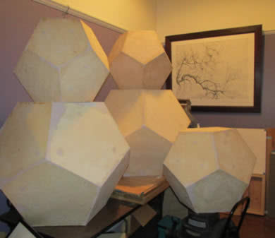
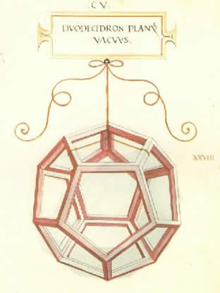
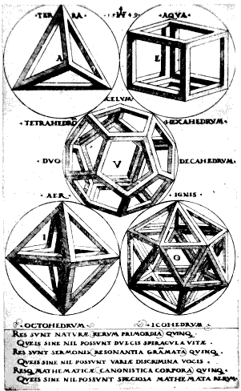
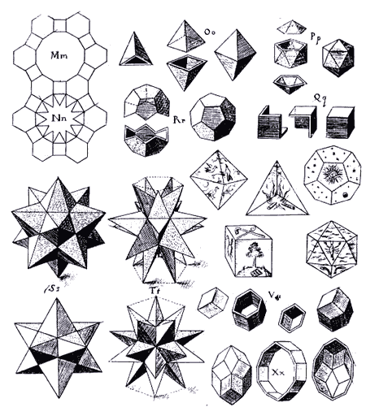

Images of Polyhedra
A polyhedron is a 3D shape with flat faces.
Will Tait, a classically trained artist, constructed a series of dodecahedrons from wood panels:

Here are some illustrations made back in the year 1509 by Leonardo da Vinci (1452-1519) for Luca Pacioli's book called the "The Divine Proportion":

And here Leonardo has illustrated the same shape but with "hollow" sides. "Vacuus" means hollow.
And here is a modern Dodecahedron just like Leonardo drew, but made of steel:

(You are supposed to imagine the faces are there)
Also like in the illustration below, which are the five Platonic Solids as drawn by a German artist called Augustin Hirschvogel (1503-1553):

And here are the Platonic Solids as dice:

Johannes Kepler (1571-1630) drew these illustrations of polyhedra for his 1619 book "Harmonice Mundi". He has even shown how they could be made:

Crystals
Geometry is in nature, too!
Salt crystals naturally grow in cube-like shapes, because the atoms link up as corners of a cube:

Here is a beautiful fluorite crystal. It naturally forms an octahedron, but this one is a "truncated" (tips chopped off) octahedron:

Courtesy Wikimedia user CarlesMillan
Animated
 |
Also explore 100s of |
Make some yourself
And you can try making some of them yourself at Platonic Solids Models.